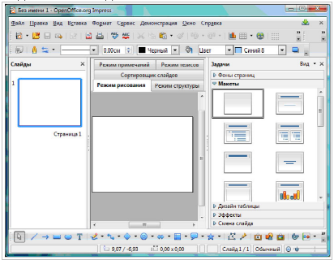
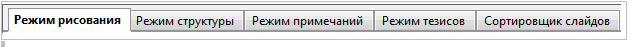
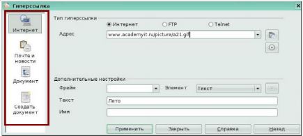
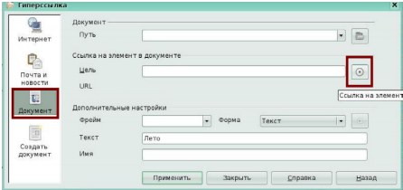

© IGP, май 2025 г.
В недавние времена лекцию, доклад или просто выступление можно было проиллюстрировать лишь с помощью мела и доски, заранее подготовленных плакатов, карт и схем, с помощью слайдов и диапроектора. Затем распространение получили проекторы, позволяющие использовать прозрачную пленку. Появление жидкокристаллических (LSD) мультимедийных проекторов позволило перейти к компьютерной подготовке и показу иллюстративного материала выступления — презентации.
Презентация — способ представления информации в наглядной и убедительной форме.
Компьютерная презентация — набор слайдов, которые могут включать в себя:
Мультимедиа — это технология, обеспечивающая одновременную работу со звуком, видеороликами, анимациями, статическими изображениями и текстами в интерактивном (диалоговом) режиме.
Компьютерная презентация — мультимедийный продукт, представляющий собой последовательность выдержанных в одном графическом стиле слайдов, содержащих текст, рисунки, фотографии, анимацию, видео и звуковой ряд.
Impress — программа в составе LibreOffice позволяющая создавать презентации, включающие различные элементы: текст, маркированные и нумерованные списки, таблицы, диаграммы, и графические объекты. В Impress присутствуют различные эффекты анимации, включая эффекты входа и выхода. Есть возможность возможности вставки звука и видеоизображений, проигрываются все популярные форматы музыки и видео.
Созданные с помощью LibreOffice Impress компьютерные презентации могут быть использованы:
Создание мультимедийной презентации целесообразно начинать с разработки плана презентации, в котором необходимо определить примерное количество слайдов в презентации, их содержание и структуру.
Прежде, чем приступить к созданию презентации необходимо четко представлять:
Разрешается объединять слайды 1 и 2.
Рекомендации:
В презентации размещать только оптимизированные (сжатые) изображения.
Рекомендации:
Плохой считается презентация, которая долго загружается, имеет большой размер.
Сохранять презентацию лучше как «Демонстрация» с расширением .odp, sxi (Impress также поддерживает форматы *.ppt, *.pps и *.pot)
Рекомендации:
Тогда в одном файле окажутся все приложения (музыка, ссылки, текстовые документы и.т.д.)
Цвет влияет на восприятие взрослых и детей по-разному.
Цвет может увеличить или уменьшить кажущиеся размеры объектов.
На одном слайде рекомендуется использовать не более трех цветов: один для фона, один для
заголовков, один для текста.
Для фона и текста используйте контрастные цвета.
Обратите особое внимание на цвет гиперссылок (до и после использования).
Для фона выбирайте более холодные тона (синий или зеленый).
Рекомендации:
Пёстрый фон не применять!
Текст должен быть хорошо виден.
Материалы располагаются на слайдах так, чтобы слева, справа, сверху, снизу от края слайда оставалось свободные поля.
Для лучшего восприятия старайтесь придерживаться единого формата слайдов (одинаковый тип шрифта, сходная цветовая гамма).
Анимация не должна быть навязчивой.
Не допускается использование побуквенной анимации текста, а также
сопровождение текста звуковыми эффектами.
Не рекомендуется применять эффекты анимации к заголовкам.
В информационных слайдах допускается анимация только для
отражения изменений.
При использовании анимации недопустимо пересечение новым объектом с уже присутствующими
на экране.
Списки использовать только там, где они нужны.
Списки из большого числа пунктов не приветствуются.
Возможно, использовать 3, 5, 7 пунктов.
Большие списки и таблицы разбивать на 2 слайда.
При подготовке слайдов в обязательном порядке должны соблюдаться принятые правила орфографии, пунктуации, сокращений и правила оформления текста.
Рекомендации:
В презентациях точка в заголовках ставится.
Проще считывать информацию расположенную горизонтально, а не вертикально.
Наиболее важная информация должна располагаться в центре экрана.
Форматировать текст по ширине.
Не допускать «рваных» краёв текста.
Уровень запоминания информации зависит от её расположения на экране.
Текст должен быть хорошо виден.
Размер шрифта не должен быть мелким. Самый «мелкий» для презентации - шрифт 22 пт.
Отказаться от курсива.
Использовать шрифты без засечек (их легче читать): Arial, Verdana.
Больше «воздуха» между строк (межстрочный интервал полуторный).
Желательно устанавливать единый стиль шрифта для всей презентации.
Следует использовать: рамки, границы, заливку, разные цвета шрифтов, штриховку, стрелки.
Если хотите привлечь внимание к информации, используйте: рисунки, диаграммы, схемы.
Не стоит заполнять один слайд слишком большим объемом информации: люди могут единовременно
запомнить не более трех фактов, выводов, определений.
Наибольшая эффективность достигается тогда, когда ключевые пункты отображаются по одному на
каждом отдельном слайде.
Рекомендации:
Размещать много мелкого текста на слайде недопустимо.
Используйте навигацию для обеспечения интерактивности и нелинейной структуры презентации. Это расширит ее область применения. (Навигация это - переход на нужный раздел из оглавления).
Рекомендации:
Навигация по презентации должна осуществляться за 3 щелчка.
Музыка должна быть ненавязчивая.
И её выбор оправдан.
Рекомендации:
Нельзя! Использовать стандартные звуки. Печатная машинка…
Для обеспечения разнообразия следует использовать разные виды слайдов:
Последний слайд копирует первый.
Основное окно имеет три части:
Рабочее пространство — то, где делается большинство работы по созданию отдельных слайдов.
Панель Задачи имеет следующие разделы:
В правой части окна Impress можно увидеть панель Макеты.
Каждый эскиз соответствует определённой разметке слайда.
По щелчку на эскизе будет установлена соответствующая разметка слайда.
Новые слайды всегда вставляются после активного (выделенного) слайда.
Порядок слайдов потом можно будет легко изменить.
Изменение порядка следования слайдов обычно осуществляется в режиме слайдов.
Область работы со слайдом расположена по центру рабочего пространства, по левую сторону от слайда расположены эскизы слайдов, по правую — панель задач. На рисунке на панели задач развёрнута панель Макеты.
В Impress доступно пять режимов работы с презентацией. Каждый из них служит для решения определённого круга задач.
Для изменения режима работы с презентацией, щёлкните мышью на одной из вкладок в верхней части рабочей области.
Подпанели боковых панелей Слайды и Задачи могут быть свёрнуты или развёрнуты щелчком на названиях их подпанелей. Смена слайдов настраивается в меню Демонстрация → Смена слайда.
Для привлечения внимания к отдельным объектам слайда имеется возможность настроить анимацию (команда меню Демонстрация → Эффекты). Все настройки можно выполнить через область задач.
Файл → Сохранить (Сохранить как). По умолчанию документ сохраняется в формате .odp. Для сохранения документа выбираем Файл → Сохранить как, затем указываем путь, то есть выбираем диск, папку.
Чтобы показать презентацию:
Интерактивная презентация — это презентация, при демонстрации которой имеется возможность изменять последовательность предъявления слайдов.
Существуют два различных способа создания переходов на слайды:
Выделите текст на любом слайде презентации и выберите Вставка → Гиперссылка. Откроется окно Гиперссылка. В левой области окна расположены пиктограммы.
Интернет. Страница Интернет в диалоговом окне Гиперссылка используется для редактирования гиперссылок с адресами WWW или FTP.
Почта и новости. На странице Почта и новости диалогового окна Гиперссылка можно создать гиперссылку для адресов электронной почты или новостей. При активизации ссылки на почту автоматически появляется окно создания сообщения.
Документ. Гиперссылки на любые документы или элементы документов можно редактировать на вкладке Документ диалогового окна Гиперссылка.
Создать документ. Вкладка Создать документ диалогового окна Гиперссылка служит для настройки гиперссылки на новый документ и одновременного создания этого документа.
Для создания гиперссылки на конкретный слайд в презентации выберите в левой панели окна Гиперссылка значок Документ. В строке Цель нажмите пиктограмму Документ.
Появится окно Ссылка на элемент в документе, в котором выберите Страница 2(под страницей понимается слайд номер 2), нажмите кнопки Применить и Закрыть.
Вы вернетесь в активное окно Гиперссылка. В окне Гиперссылка в поле Цель появится запись Страница 2. Нажмите кнопку Применить и закройте окно Гиперссылка. Вы создали гиперссылку на 2 слайд. Для удаления гиперссылки необходимо очистить поле Цель в окне Гиперссылка и нажать кнопки Применить и Закрыть.
Создать презентацию по теме в соответствии с индивидуальным заданием (номер темы в соответствии с номером в списке группы).
Разработанную презентацию назвать собственной фамилией, записать её на сервер в каталог группы или, в случае выполнения работы дома, отправить её в группу в telegram.
На выполнение работы 1 неделя (по дате изменения файла презентации или дате отправки файла).